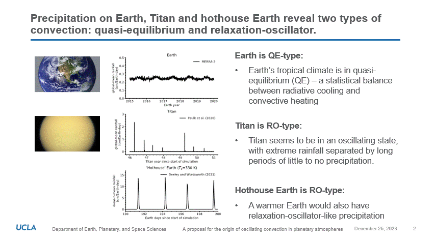
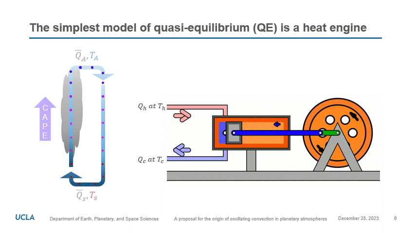

The emergence of relaxation-oscillator convection on Earth and Titan
Earth, Titan, and the “hothouse” Earth represent three distinct planetary environments, each characterized by unique conditions and atmospheric compositions. Earth has a life-supporting atmosphere primarily composed of nitrogen and oxygen. The atmosphere of Titan, Saturn’s largest moon, is similar to Earth’s in that it is rich in nitrogen but, on Titan, it rains methane instead of water. Due to its distance from the sun, Titan experiences extremely low temperatures. And yet, there is over 100 times more precipitable methane in Titan’s atmosphere than precipitable water in Earth’s. This can be understood by the fact that methane is more volatile than water. While Earth may be regarded as an ocean planet, Titan is, for the most part, an arid desert with methane lakes and rivers at its poles. The term "hothouse” Earth is a concept referring to a hypothetical state of our planet characterized by significantly elevated temperatures, driven by increased concentrations of greenhouse gases. This scenario, often discussed in the context of climate change, represents a catastrophic consequence of alterations to Earth’s atmospheric composition with implications for the climate, clouds, and precipitation. Each of these realms — Earth, Titan, and the hothouse Earth — offers valuable insights into atmospheric dynamics, climate processes, and the conditions necessary for life.
Precipitation
Comparison of the global-mean precipitation on Earth and Titan (above) reveals a fascinating dichotomy. Precipitation on Earth is steady and continuous, reflecting the fact that moist convection - that is, convection involving the condensation of water - is persistently ongoing. Titan, on the other hand, is non-precipitating most of the time. Precipitating storms on Titan are intense and short-lived and reoccur at semi-regular intervals. This unique weather produces Titan's distinct pattern of precipitation (middle plot) that resembles the waveform of a relaxed oscillator. It was recently revealed that there is an emergent dynamical similarity with respect to precipitation between Titan and the hothouse Earth. In other words, the precipitation on Earth becomes Titan-like at very high surface temperatures. The mechanism underlying the transition in precipitation patterns is currently debated.
Convection is a natural "heat engine"
Convection operates as a natural heat engine due to the fundamental principles of thermodynamics governing the movement of heat within fluids. When a fluid, such as air or water, is heated, it becomes less dense and tends to rise, creating an upward flow of warm material. As this warm fluid ascends, it releases heat to the surrounding environment. At higher altitudes, the fluid cools, becomes denser, and descends back towards the heat source to complete the cycle. This continuous process of rising, cooling, descending, and reheating produces an overturning circulation. The movement of the fluid transforms heat energy into mechanical energy, and thus exhibits a natural heat engine-like behavior.
In my new study, we demonstrate that, in order for a convective heat engine to operate in steady-state equilibrium, the heat transported by convection must be less than the work performed by the engine. This simple statement emerges from two assumptions: (1) the entropy budget in equilibrium reflects a balance between radiative processes and turbulent dissipation of kinetic energy; (2) convection must transport enough heat to offset atmospheric cooling to space.
The importance of oscillating convection
Oscillating convection is a new frontier of fluid dynamics in planetary atmospheres. By determining the factors that lead to tipping points between precipitation regimes, we stand to gain new insights into the workings of our current climate. Understanding the driving factors of precipitation is crucial for various aspects of climate science, hydrology, and environmental planning. Precipitation plays a pivotal role in Earth's water cycle, influencing water availability, ecosystems, and human activities. While mean precipitation provides insight into long-term climate trends and helps identify regions that are susceptible to weather extremes, precipitation intensity quantifies the potential impact of extreme weather events such as heavy storms or prolonged periods of drought. More needs to be done to understand how these quantities change with significant surface warming as this information is essential for infrastructure planning, flood management, and understanding the implications of climate change.
A pre-print of the study is available to read here.